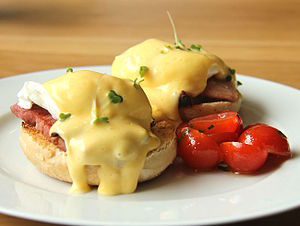
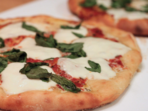
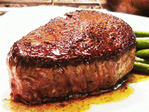

Le Restaurant | Menu
Breakfast
Eggs Benedict
Poached eggs on toasted English muffin with Canadian bacon and Hollandaise sauce, Batter Home Fries
Chesapeake Bay Benedict
Poached eggs on a toasted English muffin with jumbo lump crabmeat & caper Hollandaise, Batter Home Fries
Country Breakfast
Two eggs as you like, Batter Home Fries, country slab bacon, sausage, scrapple or ham steak and toast
Croustade
Scrambled eggs, roasted red pepper and garlic, with green onions, sausage and Pepper Jack cheese served over brioche with Batter Home Fries
Big Batter Breakfast
3 eggs, Batter Home Fries, toast, and 2 sides of meat (bacon, sausage, scrapple, or country ham)
Chorizo & Eggs
House made chorizo sausage, sautéed onions, tomatoes, pepper jack cheese and scrambled eggs in a flour tortilla with pico de gallo and Batter Home Fries

Lunch
Bayberry Wings
Fried, then tossed in Thai honey hot sauce, with cracked black pepper bleu cheese and celery sticks
Angry Wings
Traditional style hot sauce with cracked black pepper bleu cheese and celery sticks
Margherita Pizza
Rustic style dough topped with tomato, garlic, basil, and fresh mozzarella 12.00 with vegan cheese
Rustic Pizza
Rustic style dough topped with caramelized onion, Portobello mushrooms, garlic and rosemary, finished with Asiago 11.00 with vegan cheese
Classic Chicken Caesar
Romaine hearts, shaved pecorino, and croutons tossed with creamy anchovy dressing and chicken
Garden Salad
Medley of seasonal greens and vegetables tossed with our house dressing
Clam Chowder
Our very own special soup, a rich blend of chopped clams, onions and bacon in a heavy cream broth with a touch of saffron

Dinner
Filet Mignon and Crab Cake
Petite filet with demi-glace and one of our crab cakes with remoulade, served with four cheese macaroni
Crab Mappatello – a Mad Batter Classic
Jumbo lump crabmeat, ricotta cheese, spinach, and onion, baked in a puff pastry, with roasted red pepper sauce and vegetable
Shrimp & Scallop Sauté
Tossed with lobster raviolis in a roasted tomato sauce with spinach and fresh marinated mozzarella
Blackened Scallops
With remoulade, served with mashed sweet potato and vegetable
Grilled Salmon
With lobster salad, lemon beurre blanc, sweet mashed potatoes and vegetable
Pan Seared Red Snapper and Battered Shrimp
With pico de gallo, lime compound butter, fresh avocado, sweet mashed potatoes and vegetable
